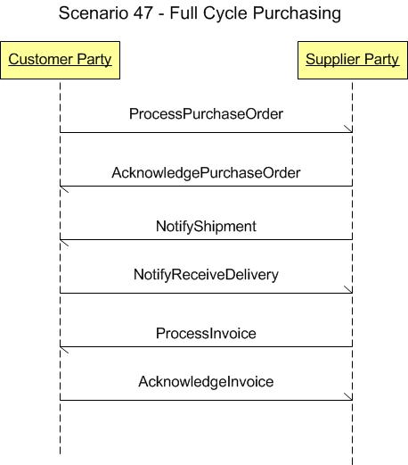

Scenario 47 - Full Cycle Purchasing47.0 OverviewScenario #47 describes the integration of full cycle purchasing of inventory goods through the interface points between buyer and supplier systems.The purpose of this scenario is to enable the visualization of the participants in the process and the dialogs between them for this specific integration. This scenario is not meant to be the only model for integrating general ledger applications to a budget applications. This is simply one model that may be used to guide one's own integration efforts. The scenario diagram below shows an integration that involves a buyer with a purchasing system, receiving system, and an accounts payable system interacting with the supplier side which consists of an order management system, a shipping system, and a billing system. Typically the buyer places an order through their purchasing system which then interacts with the seller's order management system wherein the order is acknowledged. The inventory system fulfills the order internal to the seller and the shipping system notifies the buyer that the shipment has been made by the buyer's system. The receiving system receives the shipment and the seller's billing system issues an invoice to the buyer's system. 47.1 Scenario DiagramThe scenario below contains the participants involved in the interaction, the dialog flows or conversation between them, certain assumptions about the sequence of events, and assumptions about the technical approach, for example, publish and subscribe.This is a model to be used as a design recommendation, not a required approach.  47.2 AssumptionsThis scenario assumes a loosely coupled, asynchronous approach with transaction management required but not explicitly defined.The environment for this integration may be within a single enterprise, or across enterprises. This scenarios describes a model for production execution. The environment for this first part of this integration is typically within an enterprise and within a division. The environment for the second part of this integration is typically between two enterprises. This scenario also assume that one application will maintain the master data for integration. 47.3 Participant DefinitionsThis scenario contains two participants or overall roles:
The definitions and details of these applications are left to the designer but are assumed to contain the functionality as defined by what is commonly sold in the commercial market place today. This definition is broadly accepted by the scenario designers and is a direct result of the decision not to define how the processing takes place within any individual application. Each application must be able to perform the services defined by the message BOD (business object document), but the internals of the application are not required or desired to be exposed at this level of standardized abstraction. The most important factors in defining these participants is to ensure that an integration designer can communicate the requirements precisely enough to detail the interfaces needed and their interrelationships. 47.4 Business Workflow (Sequence)The business workflow is graphically represented by starting at the Scenario top and reading from top down and from left to right.The scenario contains the following events in the workflow sequence.
47.5 Exception HandlingException handling is highly localized as the result of an implementation's infrastructure, management and business rules. As such, this section of the Scenario documentation is planned to be used as a guide to help understand the additional intent of these Scenarios. If no exceptions are noted here, then it can be assumed that the Scenario designers agreed that the Scenario is straight forward and has no additional needs:
Copyright OAGi 2017 - All Rights Reserved -- OAGIS release 10.4 - Document Number: 20170501-47 |